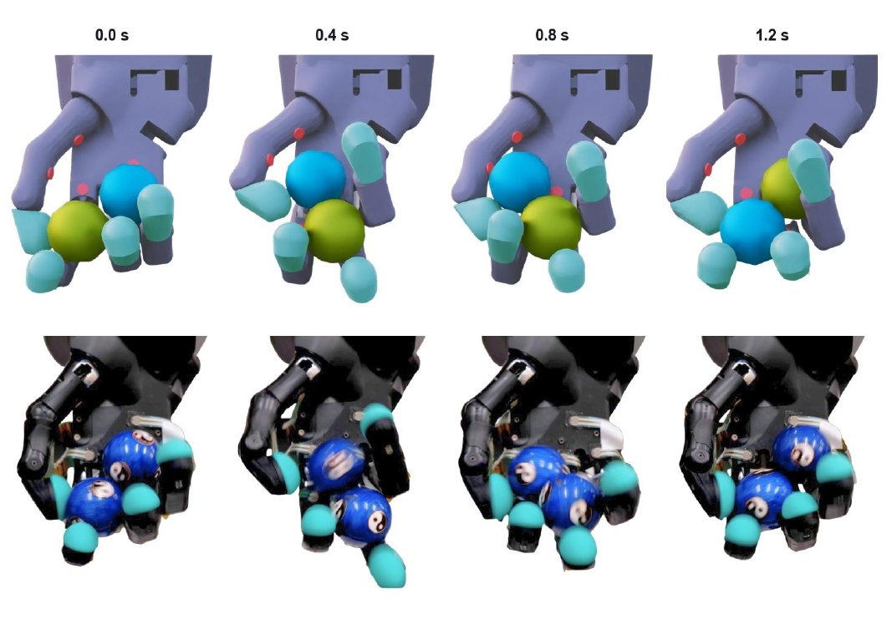
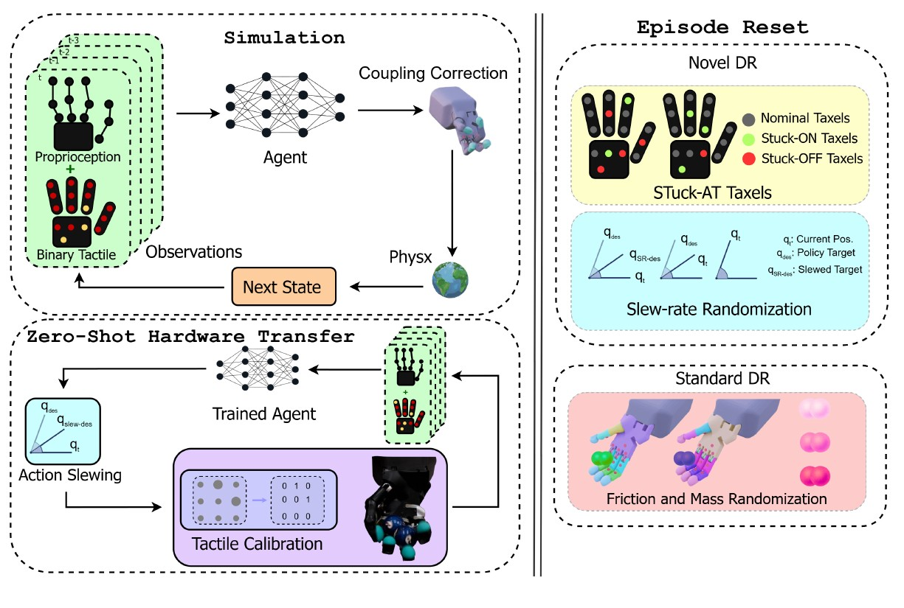
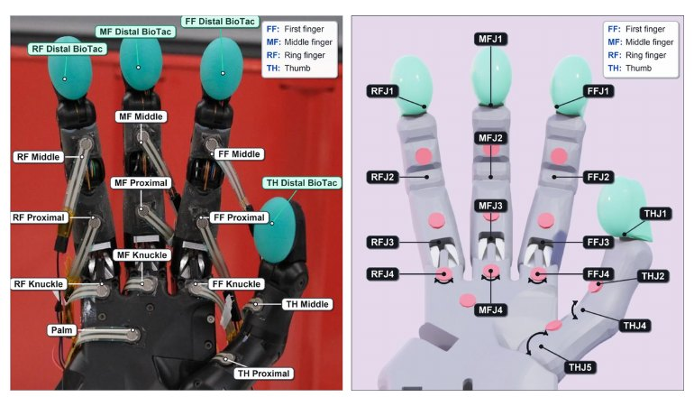

C3 (ours)
Our full method. Senses joints and touch; trained with physical, slew-rate and Stuck-AT Taxel randomisation.
- Full rotations hardware
- 34.75 avg · best 74
- Speed hardware
- 0.36 rot/s · best 0.45
- Speed sim
- 0.416 rot/s
What Does Touch Contribute to Blind Baoding Ball Manipulation?
[Affiliations]
TL;DR We trained a robot hand in simulation to spin two Baoding balls, then ran it on a real Shadow Hand Lite with no cameras and no fine-tuning. It feels its way using only its joint sensors and 16 on/off touch sensors. In one unbroken run it made 225 consecutive half-turns (112.5 full rotations) without dropping a ball.
Each row is one policy, shown in simulation and on the real hand. Every policy was deployed zero-shot, with no training or tuning on the hardware. Each hardware clip is one of the 10 trials recorded for that policy.
Our full method. Senses joints and touch; trained with physical, slew-rate and Stuck-AT Taxel randomisation.
The same C3 policy with its touch input set to zero at deployment. This shows what touch contributes.
Trained from scratch without any touch sensing, using joint readings alone; physical randomisation.
Joints and touch; physical and slew-rate randomisation, but no Stuck-AT Taxels. Moves more smoothly than C1, yet still drops the balls within seconds.
Joints and touch; physical randomisation only. The fastest policy in simulation, but its aggressive motion falls apart on the real hand.
No policy at all: a recorded joint trajectory replayed on the hand with no feedback. The baseline for "just repeat the motion".
Hardware numbers are the mean ± standard deviation over 10 trials, with the min–max range in small type. Each trial started with both balls placed by hand and ran until a ball left the hand, with no time limit. Simulation numbers come from 768 ten-second episodes across three training seeds. A dash means the metric wasn't measured or reported.
| Condition | Simulation | Hardware | |||||
|---|---|---|---|---|---|---|---|
| Speed rot/s | Drop rate | Full rotations | Time to drop s | η | Speed rot/s | Drop rate | |
| Prior hardware results | |||||||
| Nagabandi et al.† | — | — | ~0.50 | — | — | — | — |
| Yuan et al.‡ | — | — | ~3.00 | — | — | ~0.30 | — |
| Yang et al.§ | — | — | ~0.50 | — | — | — | — |
| Benchmark & ablations | |||||||
| Open-loop | — | — | 1.7 ± 1.990–5.0 | 6.1 ± 4.71–14 | — | 0.168 ± 0.1790–0.4 | 80% |
| Proprio-only | 0.591 ± 0.128 | 17% | 4.4 ± 2.440.5–8.0 | 21.4 ± 12.24–43 | 0.31 ± 0.13 | 0.226 ± 0.0980.05–0.35 | 20% |
| C3-TacOff | 0.291 ± 0.167 | 32% | 5.0 ± 4.10–14.5 | 19.0 ± 11.23–40 | 0.58 ± 0.26 | 0.256 ± 0.1120–0.4 | 20% |
| C3 (ours) | 0.416 ± 0.129 | 2% | 34.75 ± 26.062.0–74 | 94.8 ± 68.08–201 | 0.90 ± 0.16 | 0.36 ± 0.0610.25–0.45 | 10% |
| C1 | 0.959 ± 0.071 | 2% | 0.35 ± 0.630–2 | 5.9 ± 4.32–13 | — | 0.054 ± 0.0790–0.2 | 70% |
| C2 | 0.277 ± 0.082 | 9% | 0.5 ± 0.530–1.5 | 4.1 ± 1.52–7 | — | 0.101 ± 0.0940–0.25 | 100% |
Full rotations: complete 360° turns before a ball leaves the hand (one full rotation is two ball exchanges). Time to drop: seconds from both balls being seated until one falls. Speed: full rotations in the first 10 s, divided by the time the balls stayed up in that window. η (exchange efficiency): the fraction of gait cycles that actually complete a ball exchange; 1.0 means no wasted cycles. Drop rate: the share of trials in which a ball fell within the first 10 s.
† Nagabandi et al. report ~54% success at a single 180° half-rotation within 10 s (read as ~0.5 full rotations), inferred from a video demonstration. ‡ Yuan et al. report ~3 full rotations within 10 s (~0.30 rot/s). § Yang et al. show a single qualitative 180° half-rotation on hardware without object vision. None of them report trial-to-trial variance, time to drop, or how long rotation can be sustained.
People can spin objects in one hand without looking, relying on touch alone. Robots still struggle with this. Reinforcement learning can produce impressive blind manipulation in simulation, but moving those skills onto a real hand is hard. Contacts change constantly, touch sensors drift as the hand moves, and the simulator never quite matches real physics.
We study this problem with two Baoding balls on a four-fingered Shadow Dexterous Hand Lite. The policy observes only its joint readings and 16 binary contact signals. It never sees the balls and never receives their positions. Four ingredients make zero-shot transfer work: a simulated hand that matches the real sensors and tendon coupling, per-sensor touch calibration, and two new training randomisations, slew-rate limits and Stuck-AT Taxels.
On the real hand, the policy completed 225 consecutive 180° rotations (112.5 full rotations) at about 0.36 rot/s in a single continuous run, without any vision or object tracking. This is the strongest hardware result reported for Baoding balls, in both rotation count and speed, regardless of sensing modality. We also measure what touch adds on top of joint sensing alone, and which regions of the hand matter most.



@article{noeyes2026,
title = {No Eyes, No Problem: What Does Touch Contribute
to Blind Baoding Ball Manipulation?},
author = {[Authors]},
year = {2026}
}